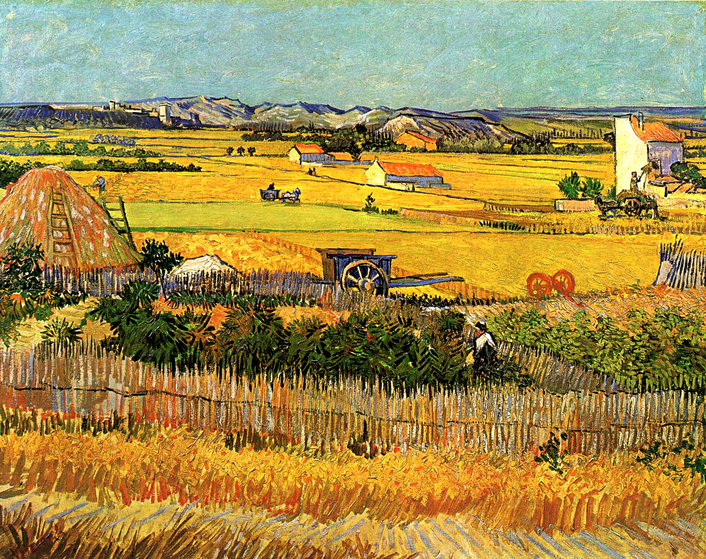
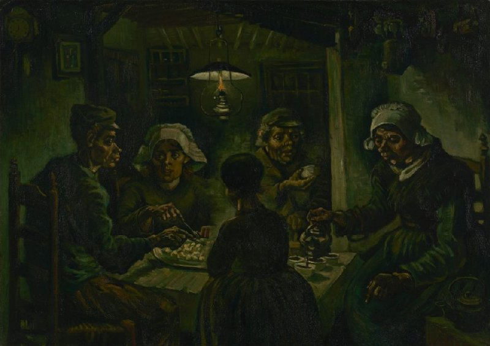

Esta pintura muestra un campo de olivos en tonos vibrantes y pinceladas audaces, característicos del estilo de van Gogh durante su estancia en Saint-Rémy-de-Provence.
La noche estrellada
Una de las obras más icónicas de van Gogh, esta pintura muestra el cielo nocturno sobre Saint-Rémy-de-Provence, con un torbellino de estrellas y una luna creciente. Refleja la intensidad emocional del artista y su conexión con la naturaleza.
Noche estrellada sobre el ródano
Es una de las obras más conocidas de van Gogh y muestra su fascinación por la noche y los efectos de la luz. Utiliza pinceladas audaces y colores vibrantes para crear una atmósfera intensa y emocional. La escena captura la belleza serena de la noche y la sensación de asombro que van Gogh experimentaba al contemplarla.

La cosecha
Este cuadro representa a campesinos trabajando en un campo de trigo, capturando la vitalidad y el ritmo de la vida rural. Van Gogh utiliza pinceladas enérgicas y colores vivos para transmitir la fuerza del trabajo en el campo.
Lirios
Una serie de pinturas de van Gogh representando diversos arreglos de lirios, destacando la belleza y la simplicidad de estas flores. Utiliza colores brillantes y contrastes audaces para crear una sensación de vitalidad y frescura.
La iglesia de Auvers
Esta pintura muestra la iglesia en Auvers-sur-Oise, un pueblo en Francia donde van Gogh vivió y trabajó en sus últimos meses. Utiliza pinceladas angulares y colores oscuros para representar la estructura imponente contra el cielo.
El sembrador
Una representación de un campesino sembrando semillas en un campo, simbolizando el ciclo de la vida y la esperanza. Van Gogh utiliza pinceladas dinámicas y colores vibrantes para capturar la energía y la vitalidad del acto de sembrar.
Almendro en flor
Una serie de pinturas de van Gogh que representan ramas de almendro en flor. Utiliza colores suaves y delicados para capturar la belleza efímera de las flores en primavera.

Los comedores de patatas
Esta pintura retrata a campesinos sentados alrededor de una mesa comiendo patatas, reflejando la vida sencilla y dura de los trabajadores rurales. Van Gogh utiliza tonos terrosos y sombríos para transmitir una sensación de humildad y dignidad.
Trigal con cuervos
Una de las últimas obras de van Gogh, esta pintura muestra un campo de trigo bajo un cielo tormentoso con cuervos volando. Se ha interpretado como una representación de la lucha interna y la melancolía del artista en sus últimos días.
La siesta
Esta pintura retrata a dos campesinos tomando una siesta en un campo, reflejando la tranquilidad y la armonía de la vida rural. Van Gogh utiliza colores cálidos y suaves para transmitir una sensación de calma y serenidad.
La habitación
Un autorretrato de la habitación de van Gogh en Arlés, donde vivió durante un tiempo. Utiliza colores brillantes y contrastes audaces para representar el espacio íntimo y personal del artista.
La ronda de los presos
Esta pintura muestra a prisioneros en un patio de la prisión, capturando la sensación de confinamiento y desesperación. Van Gogh utiliza colores oscuros y pinceladas angulares para transmitir una atmósfera sombría y opresiva.